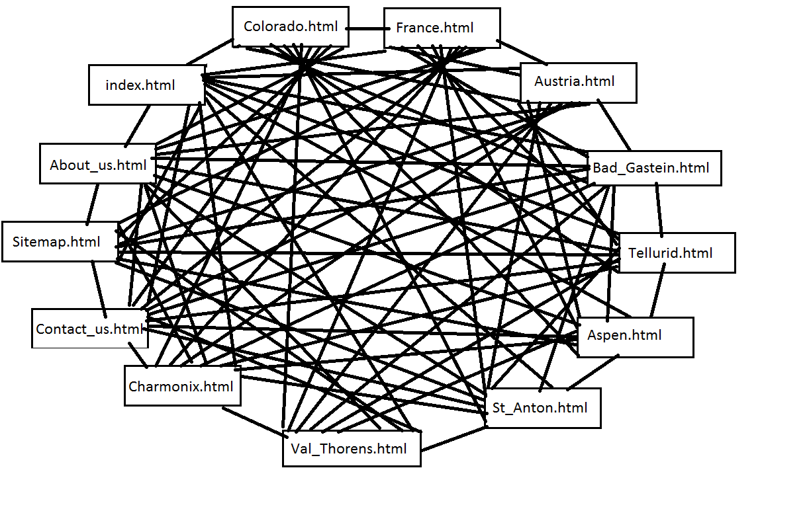

Contents
- Administrative details
- Purpose, goals and audience
- Navigation Structure
- Page Layout and Appearance
- Content
- Minimum Requirements for JavaScript
- Plan
2. Administrative details
Client name: Snow4Days Inc.
Website name: Snow4Days
Contact person: Mike Hawke
3. Purpose, goals, and audience
The purpose is to increase revenue by getting more customers. The audience are experienced skiers and snowboard enthusiasts around the world. An informative website will help them make the right choice - picking Snow4Days as their destination.
4. Navigation Structure
Every site will be accessible from one another through the navigation bar. Everything will not be shown at once, as some of the locations ski4Days is offering will be under a drop-down menu in the navigation bar, so the user will have to hover their mouse over the “Locations” button to view the different offerings. THe footer will be accessible through the footer.
5. Page Layout and Appearance
From the project requirements we have decided to have a clean and modern look, with emphasis on pictures. The page layout and appearance has been made with this in mind.
Colors
| Text color | black |
| Link color (hover) | #349292 (#93D7D7) |
| Visited link color (hover) | #D49F36 (#F4BF56) |
| Background color | #FAFEFE |
| Background color for buttons, color for rulers | #349292 |
Similar pages, by example all the country pages, will have the same design. Images will have the same size and look.
Fonts
Open Sans for the main body of text. It looks nice and is available through Google Fonts and frequently used, which means that the user probably has the font cached. For headings we use the “arvo” font. The serifs means it contrasts with the body text. It is a part of google font as well.
Links
The logo will be a clickable link that will bring users back to the main page. The navbar will link to the different locations users can order package deals to. Links will be underlined, because of convention.
Logo
On the main page the logo will be above the navbar, but on the other pages it will be a part of the navbar.
Navbar
At the front page, the navbar will be placed somewhat beneath the top of the page. At pages other than the front page, the navbar will be fixed at the top of the page. The navbar will indicate that an object is clickable, or show more options (locations), when the user is hovering over tabs in the navbar.
Footer
The footer will include a link to the site map of the page, and reference to the site creators (us).
Image/video
On the main page there will be a video in the background showing people skiing down mountains to entice users to make use of Snow4Days’ “awesome deals”.
Scaling
If project resources allow, the site will be made scalable for different screen sizes and devices. On bigger computer screens, the main body of the page will remain constant while pictures expand to fill the space.
6. Content
The website will consist of x separate pages as follows:
-
Homepage - index.html
The homepage will be the startup site. This page will include a video of people skiing in one of our clients top locations, Telluride, to catch the user's attention. Furthermore the page will have an enlarged navbar compared to the other pages. Our clients logo will on this page be located on top of the navbar, and be larger than on the other sites.
The amount of text on this page will be held to a minimum to prompt the user to use the navbar.
We believe that this homepage will encourage the potential users explore the web page further and thereby purchase packages from our client.

-
France - france.html
The France page will contain some text with information about the country.
There will also be a short summary of the two locations our client offers, Chamonix and Val Thorens to inform the users about the possibilities in the regions.
The users will have the option to click on links that lead to the pages for both Charmonix and Val Thorens to read more about the locations and how to order.
The page will include picture(s) of France.

-
Chamonix - chamonix.html
This page will be one of two under-pages to france.html.
This page will have basic information like location with map, why go there, resort height, slope height, lifts, pistes and price. This way the user is further informed about the location.
There will also be a picture as the background and the text will be to the right, this will be the default layout for all the under-pages of all the countries. There may also be pictures floated to the left.

-
Val Thorens - val_thorens.html
This will be the second under-page to france-html and will inform the users about Val
Thorens.
This page will have basic information like location with map, why go there, resort height, slope height, lifts, pistes and price. There will also be pictures and free gifts for the needy people.
The structure and layout will be similar to the page about Charmonix, and all the other pages that is dedicated to a specific location.

-
Austria - austria.html
The Austria page will contain some text with information about the country.
There will also be a short summary of the two locations our client offers, Bad Gastein and St Anton to inform the users about the possibilities in the regions.
The users will have the option to click on links that lead to the pages for both Bad Gastein and St Anton to read more about the locations and how to order.
The page will include picture(s) of Austria.

-
Bad Gastein - bad_gastein.html
This page will be one of two under-pages to austria.html.
This page will have basic information like location with map, why go there, resort height, slope height, lifts, pistes and price. This way the user is further informed about the location.
There will also be a picture as the background and the text will be to the right, this will be the default layout for all the under-pages of all the countries. There may also be pictures floated to the left.

-
St. Anton - st_anton.html
This will be the second under-page to austria.html and will inform the users about St Anton.
This page will have basic information like location with map, why go there, resort height, slope height, lifts, pistes and price. There will also be pictures and free gifts for the needy people.
The structure and layout will be similar to the page about Bad Gastein, and all the other pages that is dedicated to a specific location.

-
Colorado - colorado.html
The Colorado page will contain some text with information about the country.
There will also be a short summary of the two locations our client offers, Aspen and Telluride to inform the users about the possibilities in the regions.
The users will have the option to click on links that lead to the pages for both Aspen and Telluride to read more about the locations and how to order.
The page will include picture(s) of Colorado.

-
Aspen - aspen.html
This page will be one of two under-pages to colorado.html.
This page will have basic information like location with map, why go there, resort height, slope height, lifts, pistes and price. This way the user is further informed about the location.
There will also be a picture as the background and the text will be to the right, this will be the default layout for all the under-pages of all the countries. There may also be pictures floated to the left.

-
Telluride - telluride.html
This will be the second under-page to colorado.html and will inform the users about Telluride.
This page will have basic information like location with map, why go there, resort height, slope height, lifts, pistes and price. There will also be pictures and free gifts for the needy people.
The structure and layout will be similar to the page about Aspen, and all the other pages that is dedicated to a specific location.

-
Contact us - contact_us.html
This page will include contact information which is required to be able to purchase packages from the website, as our client is not a fan of forms on websites.
The contact information displayed will be: Address, Phone numbers and and an Email-address.

-
About - about_us.html
The about page will provide information about who our client is and the services they provide.
There will be no pictures on this site, only text, as this is a site which is only meant to provide information and not a site our client want their users to spend the most amount of time on.

-
Sitemap - sitemap.html
This will show the complete structure of the website, making it easy to navigate the site if you’re having problems finding a specific html file. This satisfies the goal of having a sitemap.
We do not have a mock-up of this page at this point, but it will be similar to the Contact us and About pages.
7. Minimum Requirements for JavaScript
Drop down menu
When hovering over a country in the navigation bar, locations in that country should be displayed underneath, allowing you jump directly to a specific location from any page. Only one such "drop down" should be displayed at any time. This will be implemented with JavaScript-code that hides the current drop-down and displays the correct one when "onMouseIn" activates, and hides the menu (or shows the one for the current page) once the mouse has left the menu area entirely.
Animations
When loading a page, some elements will fade in. Examples include background images that may take some time to load (so fade them in once they're ready). This can be implemented by changing the CSS opacity-property little by little.
Limit video playback to desktop and tablet
It would be bad if mobile users had to stream a video on the front page, eating up precious megabytes from their dataplan. Javascript could be used to hide/delete the Video element if the right conditions are met (or, alternatively only load the video if the right conditions are met).
Collapsing
In a FAQ-listing, individual questions will be listed, and the answer will be shown or hidden when clicking the corresponding question. This is different from the drop down menu since the pairs of questions and answers are independent from each other. JavaScript will take care of hiding or displaying the answer when clicking the question.
8. Plan
Organizational scheme
List of files and folders:
- index.html
- locations/
- france/
- france.html
- charmonix.html
- val_thorens.html
- austria/
- austria.html
- bad_gastein.html
- st_anton.html
- colorado/
- colorado.html
- aspen.html
- telluride.html
- france/
- about_us.html
- contact_us.html
- images/
- colorado.jpg
- videos/
- Main page video
- scripts/
- styling.css
- site.php
Work division and deadlines
We will work with iterations and follow up on each other.
| Filename | Description | Person responsible | Deadine |
|---|---|---|---|
| index.html | Home page. HTML5 Video on loop, little distractions on the page. | Andreas | 11.11.15 |
| location_template.html | Template for location page. | Jakob | 8.11.15 |
| colorado.html | Locations page for Colorado. Links to aspen.html and telluride.html | Jakob | 11.11.15 |
| france.html | Location page for France. Links to charmonix.html and val_thorens.html | Jakob | 11.11.15 |
| austria.html | Locations page for Austria. Links to bad_gastien.html and st_anton.html | Jakob | 11.11.15 |
| travel_template.html | Template for all travel pages. | Marius | 8.11.15 |
| chamonix.html | Travel page for Chamonix. | Marius | 11.11.15 |
| val_thorens.html | Travel page for Val Thorens. | Marius | 11.11.15 |
| bad_gastein.html | Travel page for Bad Gastein. | Marius | 11.11.15 |
| st_anton.html | Travel page for St. Anton. | Marius | 11.11.15 |
| aspen.html | Travel page for Aspen. | Marius | 11.11.15 |
| telluride.html | Travel page for Telluride. | Marius | 11.11.15 |
| navbar.php | Navbar for every page, will stay constant. | Thorben Dahl | 6.11.15 |
| contact-us.html | Page for how to contact us, where questions will be directed to and where you can order trips from. | Sebastian | 11.11.15 |
| about.html | About our company, what we do, what we hope to achieve. | Sebastian | 11.11.15 |
| sitemap.html | Map of the site | Andreas | 11.11.15 |
| footer.html | Footer is also same for every page, so it stays constant and consistent. | Thorben Dahl | 11.11.15 |
| styling.css | Styling linked to all pages. different look on different pages will be achieved through css selectors | Common | 11.11.15 |
| site.php | All PHP scripting needs go into this file. It will reuse HTML so that we won't duplicate the header and footer for every page. | Thorben Dahl | 19.10.15 |
| collapse.js | JavaScript for collapsing drop-down sections. Say a F.A.Q., you click on a question and the answer collapses. (we may compile all the javascript into a single file in the end, but just for simplifying development we're keeping them separate now). | Sebastian | 11.11.15 |
| animation.js | JavaScript for animations, such as fading contents. | Andreas | 11.11.15 |
| video.js | JavaScript for ensuring only desktop and tablet users must deal with the video on the front page. | Marius | 11.11.15 |
| menu.js | Javascript for the navbar, dropdown. | Jakob | 11.11.15 |